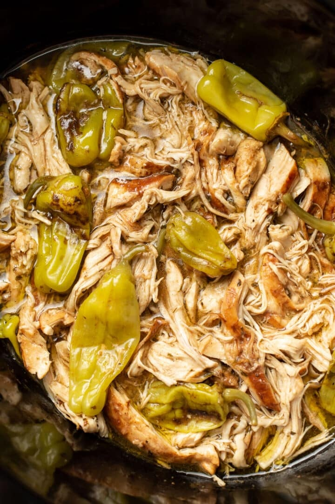

Mississippi Chicken

Why you'll love it
This delicious meal is highly adaptable. It can be consumed as is, on rice, in a
burrito, on a quesadilla, on a hoagie, or whatever other way you can think up.
It takes mere seconds to prep. Just toss the 4 ingrediants into the slow cooker,
and forget it about it for a few hours. It's easy on the wallet too. This recipe
uses a standard crockpot.
Ingrediants
- 1 Large pack boneless skinless chicken thighs
- 1 Jar pepperocinis (at your desired heat level)
- 1/2 packet Au Joius mix
- 1/2 packet Ranch Dressing mix
Steps
- Place the chicken thighs along the bottom of the pot.
- Evenly sprinkle the Aus Joius and Ranch dressing mix over the chicken thighs.
- Pour the pepperocinis along with the juice over everything.
- Place on low, cook 6-8 hours.
Odin Recipes Home
 Odin Recipes
Odin Recipes